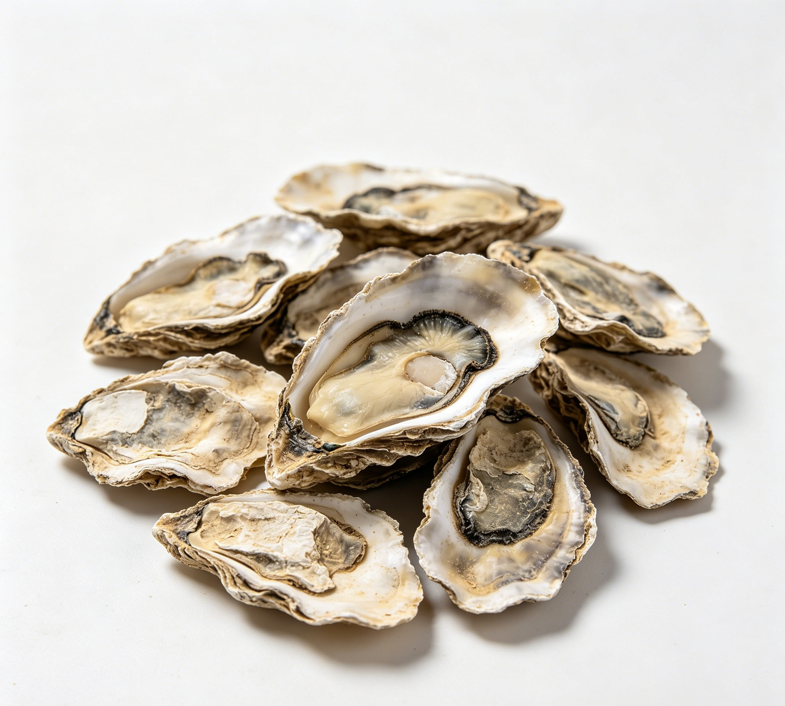

📋 基本信息
中文名牡蛎
拉丁名Ostrea gigas Thunberg
英文名Concha Ostreae
产地科属划分：软体动物门瓣鳃纲（双壳纲），牡蛎科Ostreidae，牡蛎属Ostrea；药典基原为长牡蛎Ostrea gigas Thunberg、大连湾牡蛎Ostrea talienwhanensis Crosse、近江牡蛎Ostrea rivularis Gould。主产地：我国沿海均产；长牡蛎、大连湾牡蛎主产于山东、辽宁、河北等北方沿海，近江牡蛎主产于江苏、浙江、福建、广东等沿海，山东、福建、广东等地已大规模人工养殖。
性状长牡蛎：呈长片状，背腹缘几平行，长10～50cm，高4～15cm。右壳较小，鳞片坚厚，层状或层纹状排列。壳外面平坦或具数个凹陷，淡紫色、灰白色或黄褐色；内面瓷白色，壳顶二侧无小齿。左壳凹陷深，鳞片较右壳粗大，壳顶附着面小。质硬，断面层状，洁白。气微，味微咸。大连湾牡蛎：呈类三角形，背腹缘呈八字形。右壳外面淡黄色，具疏松的同心鳞片，鳞片起伏成波浪状，内面白色。左壳同心鳞片坚厚，自壳顶部放射肋数个，明显，内面凹下呈盒状，铰合面小。近江牡蛎：呈圆形、卵圆形或三角形等。右壳外面稍不平，有灰、紫、棕、黄等色，环生同心鳞片，幼体者鳞片薄而脆，多年生长后鳞片层层相叠，内面白色，边缘有的淡紫色。【《中国药典》2020年版一部】
用法用量9～30g，先煎。【《中国药典》2020年版一部】
贮藏置干燥处。【《中国药典》2020年版一部】
☯ 传统属性
四气寒
五味咸
归经肝、胆、肾经
功能主治重镇安神，潜阳补阴，软坚散结。用于惊悸失眠，眩晕耳鸣，瘰疬痰核，癥瘕痞块。煅牡蛎收敛固涩，制酸止痛。用于自汗盗汗，遗精滑精，崩漏带下，胃痛吞酸。【《中国药典》2020年版一部】
禁忌症《中国药典》未列注意事项。本草文献记载：本品性微寒，虚而有寒者忌之，肾虚无火、精寒自出者不宜；多服久服易引起便秘和消化不良。【《本草经疏》《中华本草》】
毒性牡蛎（贝壳）作为矿物类药常规用量安全性较好，但多服、久服可能引起便秘、消化不良等胃肠道不适；性偏寒凉，脾胃虚寒者服用后可见腹泻、胃部不适。牡蛎肉生食或加热不彻底可致细菌性、病毒性食源性疾病（腹泻、呕吐）；贝类过敏者食用后可出现皮疹、瘙痒甚至过敏性反应。个别人群大量摄入富锌牡蛎肉可致锌过量（恶心、胃痉挛）。
适宜体质气虚质、平和质、阴虚质、湿热质
适宜证型气虚证、脾胃气虚证、阴虚证、肺阴虚证
🔬 现代研究
主要成分牡蛎贝壳以碳酸钙为主（含量一般在90%以上，药典要求≥94.0%），另含少量磷酸钙、硫酸钙、氧化硅及镁、铁、锌、硒、锶等微量元素，壳中含壳角蛋白（conchiolin）及多种氨基酸；煅制后部分碳酸钙转化为氧化钙。牡蛎肉富含优质蛋白质、糖原、牛磺酸、多种氨基酸（谷氨酸、甘氨酸等）、锌（含量居食物前列）、硒、铁、维生素B12及牡蛎活性多肽。已报道的代表性成分包括碳酸钙、牛磺酸、牡蛎多糖与牡蛎肽、锌等。
药理作用贝壳类研究：牡蛎壳粉（碳酸钙）具中和胃酸、抗酸止痛作用，可用作钙补充剂；煅制后钙离子溶出增加。牡蛎肉及其提取物研究：牡蛎肽在动物与体外试验中显示抗氧化、降血压（ACE抑制）、抗疲劳、增强免疫（促进巨噬细胞吞噬与淋巴细胞增殖）、保肝、降血脂及辅助改善男性生殖功能（富锌）等活性；牡蛎多糖、牛磺酸亦报道有抗氧化、调节血脂、护肝作用；牡蛎提取物对部分病毒（如脊髓灰质炎病毒）有体外抑制作用报道。上述多为实验研究，临床证据有限，供参考。
食疗功效传统食疗认为牡蛎肉味甘咸、性平，有滋阴养血、安神、软坚之功，煮食可补虚弱、调中、止烦渴，用于虚劳不足、心烦失眠、自汗盗汗等。现代营养学角度，牡蛎肉高蛋白低脂肪、富含锌、牛磺酸与糖原，有助于补充营养、促进食欲与体力恢复；牡蛎壳煅用可中和胃酸，传统用于胃酸过多、胃脘疼痛。以上为食疗与营养层面的辅助作用，不能替代药物治疗。
食养禁忌
🏭 产品形态与潜在功能
推荐形态
粉末胶囊提取物
潜在功能